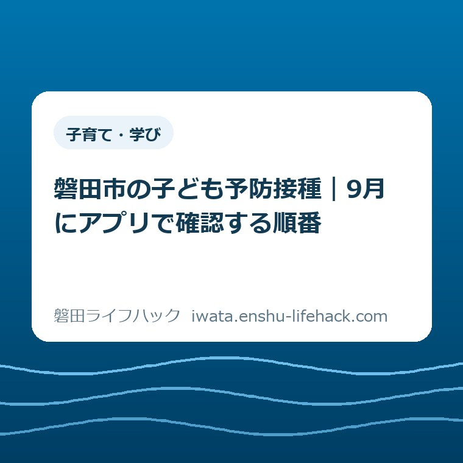

子育て・学び
磐田市の子ども予防接種｜9月にアプリで確認する順番

この記事の要点
Q. 9月、子どもの予防接種はアプリで何から確認すればいいですか？
A. 母子モに子どもの情報を登録し、未接種と次回予定を確認します。次に、2026年4月1日更新の市公式スケジュール、母子健康手帳、医療機関の予約条件を照合。最後に予診票などをそろえます。
導入——9月はアプリを開くだけで終わらせない
磐田市で子どもの予防接種を確認するなら、9月は予定を棚卸しする月に向いています。夏の予定が一段落し、秋から冬の通院予定を家族で組み直しやすい時期だからです。これは市の決めた期限ではなく、私が段取りとして勧める確認日です。
最初に結論を書きます。母子モを開いて子どもの情報を確認し、未接種の欄と次回予定を見ます。その表示を、磐田市公式の標準スケジュールと母子健康手帳に照らし、最後に医療機関へ予約条件を聞きます。
アプリだけで完結させないのがコツです。アプリは日付を忘れないための道具です。接種できる年齢、接種間隔、体調、医師の判断までを自動で引き受けるものではありません。
磐田市の標準スケジュールは2026年4月1日に更新されています。2025年度に保存した画像や、家族の古いメモをそのまま使わず、9月3日に公式ページを開き直すところから始めます。
この作業は、接種を受ける子どもだけの管理ではありません。誰が予約し、誰が母子健康手帳を持ち、次の予定をどこに記録するかを家族で決める作業です。記録の持ち主を一人に固定すると、その人が忙しい日に予定が止まります。

磐田市公式の更新内容を先に押さえる
磐田市「定期予防接種の種類とスケジュール」は、ページ番号1010274、更新日2026年4月1日の資料です。この記事では2026年9月3日に確認しました。資料にはワクチンの種類、対象年齢、標準的な接種期間、回数や間隔が表で示されています。
生後2か月から7歳6か月になる前日までに接種するものとして、ロタウイルス、小児用肺炎球菌、B型肝炎、五種混合、BCG、MR1期、水痘、日本脳炎1期などが載っています。年齢だけでなく、出生後の日数や前回接種からの日数も関係します。
たとえばロタウイルスはワクチンの種類で接種できる期限が異なります。ロタリックスは出生24週0日まで、ロタテックは出生32週0日までです。初回接種は生後2か月から出生14週6日後までと書かれています。
小児用肺炎球菌は、初回を生後2か月から7か月になる前日まで、追加を1歳から1歳3か月になる前日までとする標準期間があります。初回を始めた月齢によって回数が異なるため、アプリの予定だけで回数を推測しないことが必要です。
BCGは1歳になる前日までが対象で、標準的な接種期間は生後5か月から8か月になる前日までです。水痘は1歳から3歳になる前日までが対象で、2回目は1回目から6か月から12か月あける標準です。
日本脳炎1期は対象が6か月から7歳6か月になる前日までです。標準的な初回は3歳から4歳になる前日まで、追加は4歳から5歳になる前日までとされています。標準と対象は同じ意味ではありません。
年長になる年度以降の接種もあります。MR2期は年長児の一年間に1回、日本脳炎2期は9歳から13歳になる前日までに1回、二種混合DTは11歳から13歳になる前日までに1回です。子どもの年齢が上がった後も台帳を閉じません。
磐田市は「子どもの予防接種」のページで、接種時期を遅らせず予定どおり受けるよう案内しています。病気にかかりやすい年齢などをもとに時期が決まっているためです。予定がずれたときは、自己判断で飛ばさず、医療機関か市の担当窓口へ相談します。
いわた子育てアプリで確認できること
磐田市の「いわた子育てアプリ」は、スマートフォン、タブレット、パソコンに対応したWeb・アプリサービスです。アプリ名としては母子モで検索します。磐田市の住民票上の住所の郵便番号を入力して使う案内になっています。
予防接種の管理機能では、子どもの生年月日を入力すると、接種スケジュールを確認できます。磐田市公式ページは、接種実績に応じた再スケジューリングにも対応すると説明しています。複数回の接種を記録する入口として役立ちます。
対応OSも公式ページに書かれています。スマートフォンやタブレットでは、Android 8.0以上、iOS 15.0以上が案内されています。端末の環境によって表示や操作が違う場合は、登録作業を途中で止めず、Web版の利用可否も確認します。
アプリには子育て情報の配信、身長・体重などの記録、家族間の共有機能もあります。この記事の目的は機能紹介ではなく、予防接種の予定を家族の段取りに落とすことです。全部を登録する必要はありません。まず子どもの生年月日と接種歴に絞ります。
意外なのは、アプリが便利になるほど紙の母子健康手帳が不要になるわけではないことです。磐田市の接種当日の持ち物は、予診票、母子健康手帳、マイナ保険証など住所・年齢を確認できるものです。アプリは紙の代わりではありません。
私がここで迷うのは、便利な画面を信じるほど、入力間違いに気づきにくくなる点です。接種日を一日ずらして登録すれば、その後の予定もずれる可能性があります。だから私は、入力直後に母子健康手帳の記載と日付を一度照合するように案内します。
9月に確認する順番——家族の作業を五つに分ける
9月の予防接種確認は、五つの作業に分けると止まりにくくなります。アプリを開いた人が最後まで抱え込まず、登録、照合、予約、持ち物、共有を分担します。今日すべて終わらなくても、日付が一つ確定すれば前進です。
- 子どもの情報と居住地の郵便番号を母子モで確認する
- 未接種・次回予定を母子健康手帳の接種日と照合する
- 2026年4月1日更新の磐田市公式スケジュールで対象年齢と間隔を確認する
- 接種する医療機関へ予約の要否、日程、持ち物を電話で確認する
- 予診票、母子健康手帳、マイナ保険証などを一つの場所に置く
一つ目はプロフィール確認です。子どもが二人以上いる家庭では、今見ている名前が誰かを確認します。居住地の郵便番号も、磐田市の住民票上の住所になっているか見ます。転入や転出の予定がある家庭は、市の窓口への確認をこの時点で加えます。
二つ目は実績入力です。母子健康手帳を開き、ワクチン名、接種回数、接種日をアプリの記録と照らします。ロタウイルスのように種類で期限が変わるものは、略称で済ませず、記録されたワクチン名まで見ます。
三つ目は公式表との照合です。標準期間に入っているか、前回から必要な間隔が空いているかを見ます。接種時期がずれている場合、アプリの赤い表示だけで判断しません。市公式の「接種における注意事項」には、所定の間隔でない場合は自費になる案内があります。
四つ目は医療機関への予約です。磐田市個別接種協力医療機関の一覧には、磐田市のほか袋井市、森町、浜松市天竜区、浜松市旧浜北区の医療機関が載ります。予約が必要な医療機関もあるため、一覧を見て電話で確認します。
電話では「子どもの生年月日」「ワクチン名」「何回目か」「前回の接種日」「希望時期」を伝えます。市の一覧に載っていることと、希望日に予約できることは別です。受付時間、持ち物、同時接種の可否は医療機関の案内を優先します。
五つ目は持ち物です。予診票が見つからない場合は、接種前に再発行の確認をします。母子健康手帳はアプリの画面で代用できると決めつけません。住所や年齢を確認できるものも、出発前にバッグへ入れます。
当日は体温を測り、子どもの体調を確認します。磐田市は、日頃の健康状態をよく知る保護者の同伴を案内しています。保護者以外が同伴する場合や、13歳未満で保護者以外が同伴する場合は委任状が必要です。年齢で必要書類が変わるため、医療機関に聞きます。

月齢別に見る標準スケジュール
生後2か月前後は、ロタウイルス、小児用肺炎球菌、B型肝炎、五種混合など4種類前後が重なります。アプリの通知を受け取るだけでなく、何回目の接種かを家族が読める言葉で残します。予約日と接種日を別々に書かないことが大切です。
生後5か月から8か月になる前日は、BCGの標準期間です。乳児の体調や医師の判断で予定が変わることがあります。標準期間を外れそうなときは、アプリの予定変更を先に行うより、医療機関に相談し、相談した日と回答を記録します。
1歳を迎える前後は、MR1期、水痘、小児用肺炎球菌の追加などが重なりやすい時期です。MR1期の対象は1歳から2歳になる前日まで、水痘は1歳から3歳になる前日までです。誕生日だけでなく「前日まで」という表現を確認します。
水痘の2回目は、1回目から6か月から12か月あける標準です。アプリが示す日付を見たら、母子健康手帳の1回目の日付を横に置きます。月だけの記録では間隔を計算できないため、日まで残します。
3歳から4歳になる前日は、日本脳炎1期初回の標準期間です。初回は2回で、標準的には6日から28日あけます。追加は初回2回目の後、おおむね1年を経過した時期です。次回予定が表示されても、前回の日付を元に確認します。
年長児はMR2期を確認します。磐田市の表では、小学校就学前の一年間が標準的な期間です。年長になる直前に予診票を郵送する案内もあります。封筒が届く時期とアプリの通知を別の情報として保管します。
9歳、11歳の節目では、日本脳炎2期、二種混合DTを確認します。乳幼児期を過ぎると予防接種の予定が見えにくくなりますが、母子モの対象を幼児だけと決めず、子どもの情報を残します。
磐田の暮らしに置き換える——予定は家族の共有財産
磐田市は南北に広く、接種先への移動時間も家庭ごとに違います。市内の医療機関を選ぶ家庭もあれば、袋井市や森町の協力医療機関が生活動線に合う家庭もあります。公式一覧に載っている範囲と、予約の取りやすさは同じではありません。
保護者が車を出し、別の家族が母子健康手帳を持つなら、前日の夜に持ち物を一緒に確認します。磐田市国府台のiプラザにあるこども若者家庭センターへ確認する場合も、電話番号0538-37-2012と質問をメモしてから連絡します。
私は不動産の相談で、家族の予定が一人の頭の中だけにあると、担当者が休んだ日に手続きが止まる場面を見ます。予防接種も同じです。母子モを家族間で共有し、紙の母子健康手帳の保管場所を決めるだけで、予定を引き継げるようになります。
体験ストックに予防接種の実話はありません。そこで、これは私の意見として書きます。私なら9月3日の夜に、母子モの画面、母子健康手帳、公式スケジュールのURLを家族の共有メモに並べます。完璧な管理を目指さず、次の一回を誰が予約するかだけ先に決めます。
この一歩で家計に新しい費用が発生するわけではありません。磐田市の定期予防接種は、市が定めた対象年齢・期間などの条件内なら費用を市が負担します。一方、対象年齢より早い、期間を過ぎた、間隔が足りない場合は自費になる案内です。条件確認が家計を守ります。
接種のための移動費や、保護者が仕事を休む時間は家庭ごとに変わります。だから「アプリに予定がある」だけでなく、予約日、移動時間、誰が行くかまでカレンダーに入れます。予定を数字にすると、無理な予約を早く見つけられます。
評価——良い点と、注文したい点
良い点は三つあります。第一に、生年月日から標準的な予定を確認できることです。複数のワクチンを紙だけで計算する負担を減らせます。第二に、接種実績に応じた再スケジューリングに対応していることです。第三に、スマートフォンだけでなくパソコンでも使えることです。
良い点を、家計と段取りに翻訳すると、保護者が予定を調べ直す時間を減らせることです。乳幼児の家庭では、電話をかけられる時間が限られます。予約前に確認材料をそろえられるだけでも、問い合わせの往復を少なくできます。
注文したい点もあります。アプリの便利さが、公式資料の確認を省く理由にならないようにしてほしい。2026年4月1日に市公式の標準表が更新された以上、アプリの表示と公式表が違って見えたとき、どちらを確認すべきかを画面上でも迷わない案内が要ります。
もう一つは、接種できない事情がある家庭への導線です。病気療養、転入、里帰り、予診票の紛失、保護者が同伴できない事情は、アプリの予定変更だけでは解決しません。公式ページの相談先へ一回で移れるリンクが、保護者の目につく場所にあると助かります。
これはアプリを否定する注文ではありません。私はAIやデジタルの道具を仕事で使います。使うからこそ、入力した人が最後に資料と現実を照合する設計が必要だと考えます。予定管理を丸投げすると、間違いを見つける人がいなくなります。
対案・結論——9月は一件だけ確定する
今日できる一歩を一つに絞ります。母子モを開き、子ども一人分の次回予定を母子健康手帳と照合し、家族のカレンダーに「誰が医療機関へ電話するか」を書いてください。接種日が未定でも、電話する担当者が決まれば次の作業が動きます。
その後、2026年4月1日更新の標準スケジュールを開き、対象年齢と接種間隔を確認します。医療機関の予約、体調、個別の接種可否は、医師と医療機関の案内を優先します。わからない点を残したまま、アプリの表示だけで確定しません。
予防接種の手続きそのものは、当サイトの子どもの予防接種を確認するページに入口をまとめています。全体の健康・医療の導線が必要なら予防接種のまとめも使えます。
乳幼児健診や保育の予定も同じカレンダーで管理するなら、2026年の就学時健康診断の記事やこども誰でも通園制度と一時預かりの記事も、必要になった時点で確認してください。制度は目的と対象が違うため、同じ欄に混ぜず、予定名を正式名称で残します。
家族で共有するための記録
共有メモには、子どもの名前、生年月日、最後に接種した日、次に確認するワクチン、予約担当者、公式ページを記録します。個人情報を広い場所に貼らず、家族だけが見られる場所に置きます。アプリのログイン情報を紙へ丸ごと書く必要はありません。
接種歴は、ワクチン名と回数を省略しない形で残します。「肺炎球菌をやった」ではなく、「小児用肺炎球菌・初回2回目・2026年5月10日」のように書きます。次の人が同じ意味で読めることが目的です。
予約後は、予約日と接種日を分けて記録します。予約の電話をした日、医療機関名、持ち物の回答も残します。キャンセルや延期になった場合は、古い日付に線を引くだけでなく、次に電話する日を新しく書きます。
接種当日の体調がよくないときは、受診前に医療機関へ連絡します。接種後に高熱、ひきつけ、接種した場所のひどい腫れなどがあれば、磐田市公式の注意事項に沿って医師へ相談します。症状の判断をアプリの通知だけに任せません。
引っ越しや里帰りで他市町の医療機関を希望する場合は、磐田市の協力医療機関以外では事前申請が必要になる場合があります。住民票や接種場所が動くと、確認先も変わります。予定を消す前に、現在の自治体と接種先へ相談します。
大石の視点
私は磐田市で不動産業を営み、家族がいつ何を動かすかを先に整理してから話す仕事をしています。予防接種も、知識量の勝負に見えて、実際には記録と担当者を決める段取りの話です。
市の仕組みは、母子モ、標準スケジュール、接種協力医療機関、相談窓口まで用意されています。良い仕組みです。ただし、最後に「この子の次はいつか」を確定するのは、家庭と医療機関です。そこを一つの画面に丸ごと預けないことを、私は勧めます。
9月3日に全部の接種予定を完璧に組み直す必要はありません。今日の一件を母子健康手帳とアプリで照合し、予約の電話を誰がするかを決める。まだ決められない日があっても、確認先と次の一歩が見えていれば、予定は止まりません。
まとめ
磐田市の子ども予防接種を9月に確認するときは、アプリを開く順番がそのまま安全確認の順番になります。子どもの情報、接種歴、公式スケジュール、医療機関、持ち物を一つずつ見ます。
- 母子モに生年月日と接種実績を登録し、母子健康手帳と照合する
- 2026年4月1日更新の磐田市公式スケジュールで対象年齢・接種間隔を確認する
- 予約と当日の持ち物は医療機関へ確認し、最新情報は磐田市公式ページで確定する
参考にした公式情報
- 定期予防接種の種類とスケジュール／磐田市（2026年9月3日確認。ページ更新日2026年4月1日）
- いわた子育てアプリ／磐田市（2026年9月3日確認。ページ更新日2025年7月23日）
- 接種における注意事項／磐田市（2026年9月3日確認）
- 磐田市個別接種協力医療機関／磐田市（2026年9月3日確認。ページ更新日2026年4月1日）
 この記事の執筆：
この記事の執筆：最終確認日：2026-09-03 ／ 本記事は公表情報と執筆者の見解を分けて記載しています。制度・数値・公開状況は変更される場合があるため、最新情報は磐田市公式ページでご確認ください。